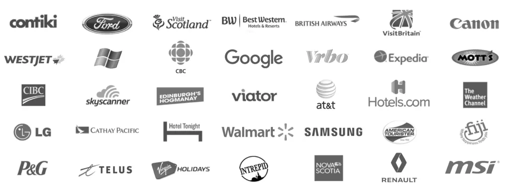

Nadine Sykora is a top travel video content creator with more than 50+ million views across hundreds of long & short-form videos shared to a network of over 600,000+ subscribers.
Over the years, she has written, produced, and created content for some of the biggest international brands, companies, and tourism boards. She & her work has been featured in Forbes, CNN, BBC, NBC News, LA Times, US Today, Observer, Mashable, Lonely Planet, BuzzFeed, Yahoo Travel, Huff Post, and more.
Nadine’s extensive experience, reputation, and on-camera personality make her highly sought after in the travel and social media industry. All of these factors have earned her a place as one of the top creators in her field.
For a full media kit and all inquiries please contact.
contact@heynadine.comOver the last 10 years, I have had the pleasure of working on campaigns and producing videos for:
I have also presented & been on expert panels at the Canadian Media Producers Association, Google, VidCon, Buffer Festival, and the Travel & Adventure Show. Co-MC’d the International Luxury Hoteliers Conference, plus was a keynote speaker at the 2016 Women in Travel Summit.
I was invited to attend the White House Travel Blogger Summit on Study Abroad and Global Citizenship as one of the Top 130 most influential travel bloggers and digital media outlets.
My love for both travel and teaching others has driven me to create fun and engaging videos and blog posts that inspire others to pursue their own travel dreams. I love sharing my experiences and knowledge in an entertaining and informative way that will leave a lasting impact on my audience.